村人陣営

村人
能力は、ありません。
占い師
明け方の度に、自分以外の生存者1人を占って「村人」か「人狼」かを知る事ができます。
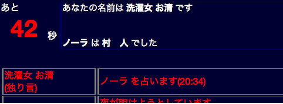
妖狐を占った場合、呪い殺すことができます。
(占い結果は「村人」と出て、翌日の昼に人狼の襲撃結果と区別できない形で判明します。)
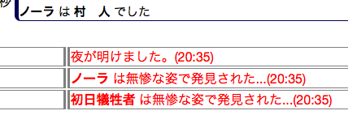
霊能者
その日に処刑されたプレイヤーが「村人」か「人狼」かを知る事ができます。
この能力は夜に自動的に実行されます。
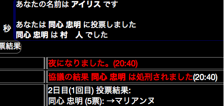
狩人
明け方の度に、自分以外の生存者1人を護衛することができます。
護衛されたプレイヤーは人狼の襲撃で死亡しません。妖狐を護衛した場合、占い師による殺害は防ぐことができません。
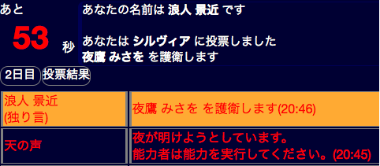
共有者
自分以外にもう1人いる、他の共有者が誰であるかを知る事ができます。
2人とも生存している場合、夜に共有者同士で会話することができます。
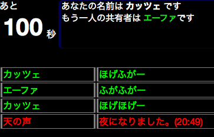
猫又
処刑された場合、全生存者の中からランダムに1人を道連れにします。
この場合、対象が猫又の能力で死亡した事が分かる形で公開されます。
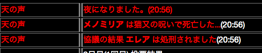
人狼に殺害された場合、生存している人狼をランダムに1人道連れにします。
この場合、対象は襲撃結果と区別できない形で公開されます。
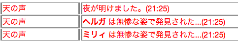
少女
2日目の明け方以降、毎晩一人を「村人」「人狼」のどちらであるかを調べることができます。
この能力は、明け方の残り時間が半分以上残っている場合のみ実行できます。
少女の能力実行が可能な間は、残り時間が赤色で表示されます。

対象が人狼であった場合、相手にも、自身が少女であることが知られてしまいます。
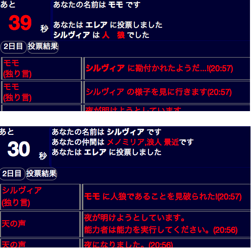
人狼陣営
人狼
自分以外の人狼が誰であるかを知る事ができます。
明け方に、プレイヤー1人を指定して襲撃(殺害)することができます。
誰を襲撃するか、という情報は人狼同士で共有できません。
ただし、襲撃先を決定する度に、それを示すシステムメッセージが流れます。

能力時間非固定の村(デフォルト)では、明け方の時間内ならば襲撃先を変更できます。
この場合、全人狼の中で最後に指定された対象を襲撃します。
夜に、生存している人狼同士で会話(遠吠え)をすることができます。
遠吠えでは、人狼以外のプレイヤーには発言者の名前・発言内容は見えず
「アォォーーン」と表示されます。
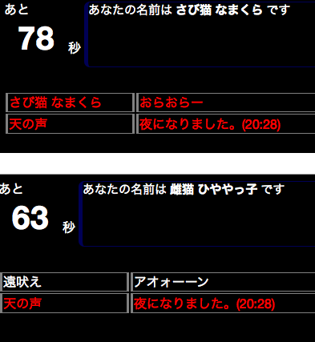
狂人
占い師・霊能者・少女の能力結果では「村人」となりますが、人狼陣営です。
誰が人狼であるかを知る事はできません。また、人狼は誰が狂人であるかを知る事はできません。
勝利条件の人数計算では、村人としてカウントされます。
例: 生存者が5人いて、内訳が村人・村人・狂人・人狼・人狼 である場合、
人狼の勝利条件は満たされていません。
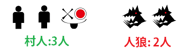
オプションで狂人の代わりに登場する役職です。
占い師・霊能者・少女の能力結果では「村人」となりますが、人狼陣営です。
誰が人狼であるかを知る事はできません。また、人狼は誰が妖術師であるかを知る事はできません。
明け方に、毎晩1人の役職が「村人」であるかを調べることができます。
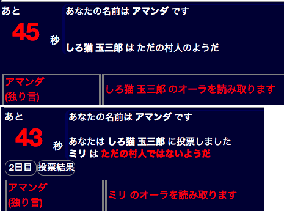
狂人と同様、勝利条件の人数計算では、村人としてカウントされます。
妖狐陣営
妖狐
人狼に襲撃されても死亡しませんが、占い師に占われると死亡します(少女・妖術師の能力対象になった場合は死亡しません)。
占い師・霊能者の能力結果では「村人」と表示されます。
勝利条件の人数計算では、村人・人狼陣営のどちらとしてもカウントされません。
例: 生存者が5人いて、内訳が村人・村人・妖狐・人狼・人狼 である場合、
村人陣営2人、人狼陣営2人と計算するため、
人狼陣営の勝利条件を満たしています。そのため、妖狐の勝利となります。
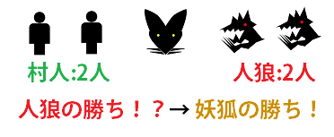